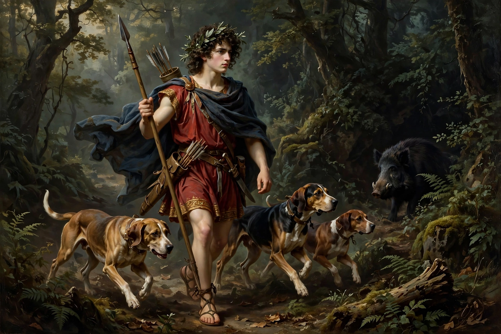

| Parents | Cinyras and Myrrha (Smyrna) |
|---|---|
| Lovers | Aphrodite, Persephone |
| Death | Killed by a wild boar |
| Festival | Adonia |
| Origin | Phoenician religion (cf. Astarte) |

Adonis was the mortal lover of the goddess Aphrodite in Greek mythology. Famed for his beauty, he was killed while hunting a wild boar, and from his blood Aphrodite made the anemone flower spring forth. His myth, rooted in the religions of the Levant, made him a central figure of a cult of death and rebirth celebrated by women across the Greek world.
Adonis was born from a myrrh tree, into which his mother Myrrha (Smyrna) had been transformed after her incestuous union with her father Cinyras of Cyprus. Aphrodite, struck by the infant's beauty, hid him in a chest and entrusted him to Persephone, queen of the dead. When Persephone refused to return him, Zeus decreed that Adonis spend part of each year with each goddess — in some versions a third of the year with Aphrodite, a third with Persephone, and a third as he chose. Despite Aphrodite's warnings he hunted a boar — sent, in some accounts, by a jealous Ares or Artemis — and was gored to death. In other versions he rises again, embodying the annual cycle of vegetation.
The festival of the Adonia, held in midsummer, centred on the "gardens of Adonis": herbs grown quickly in shallow pots that withered in the heat, symbolising his brief life. Sappho already mentions the ritual lament for Adonis on Lesbos. His name derives from the Semitic adōn, "lord", and his cult is cognate with that of the Mesopotamian Dumuzi (Tammuz) and the Phoenician Eshmun.
See also: Astarte · Anchises · Twelve Olympians